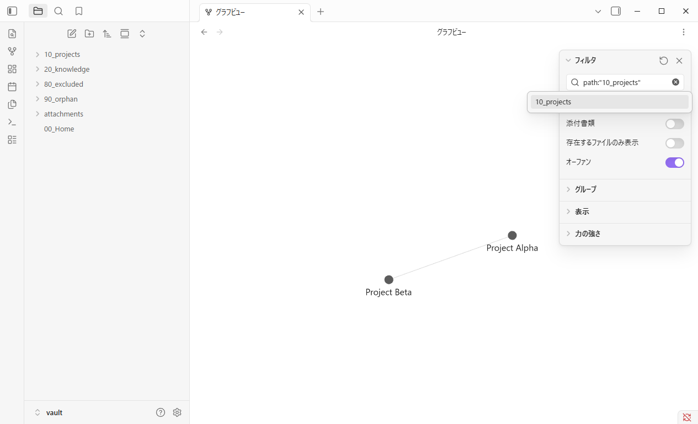
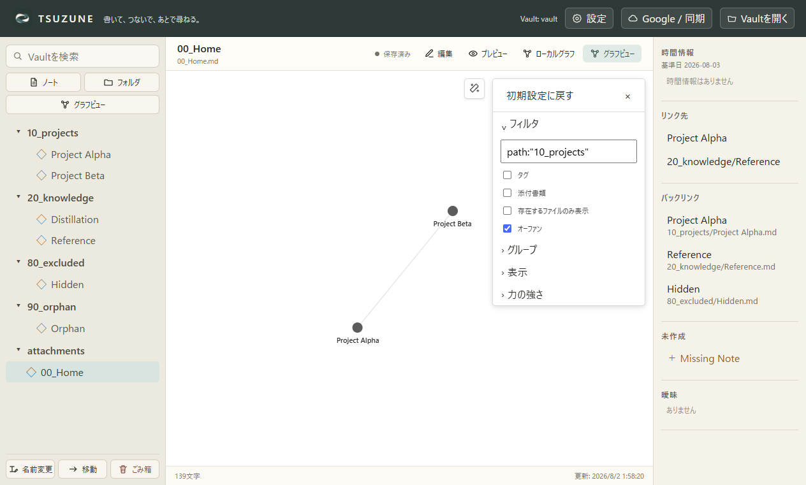
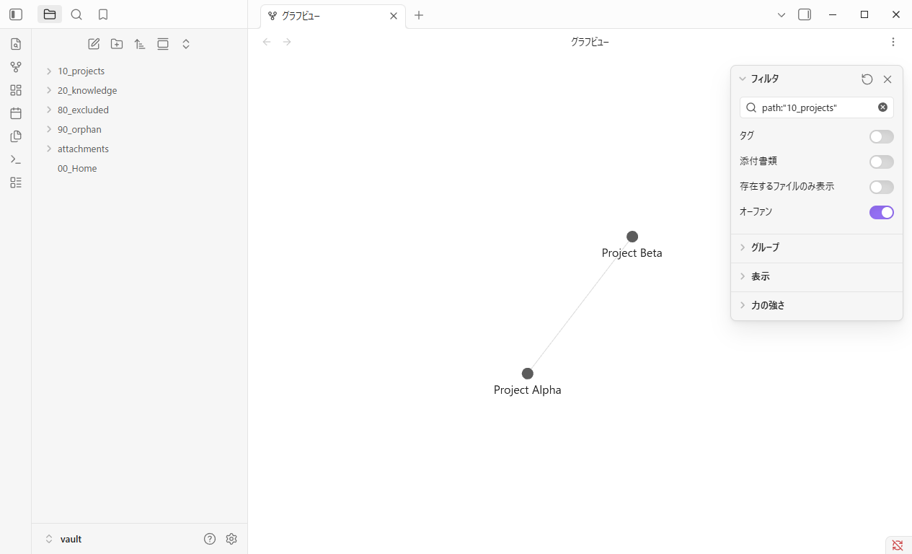
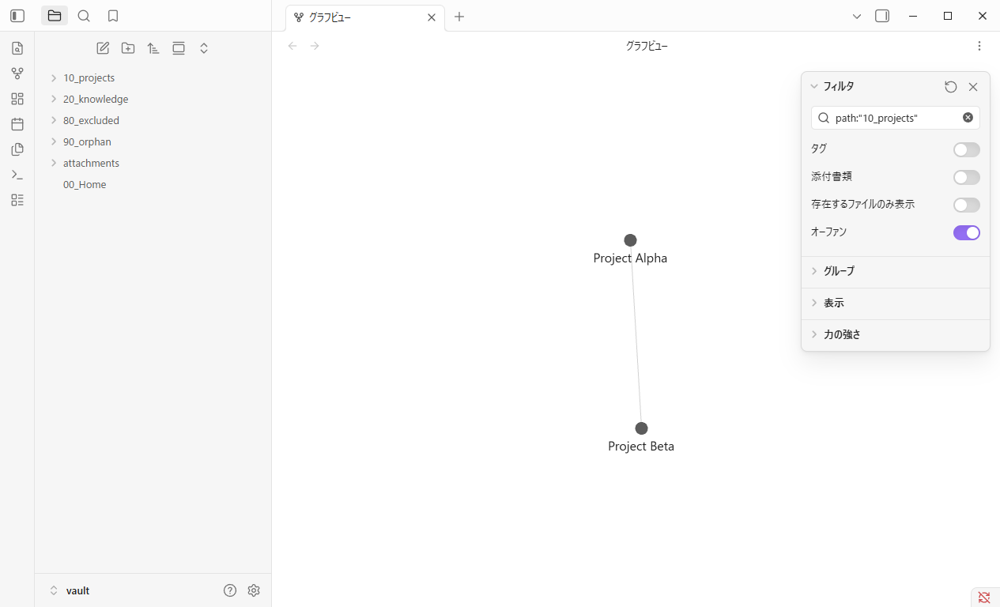
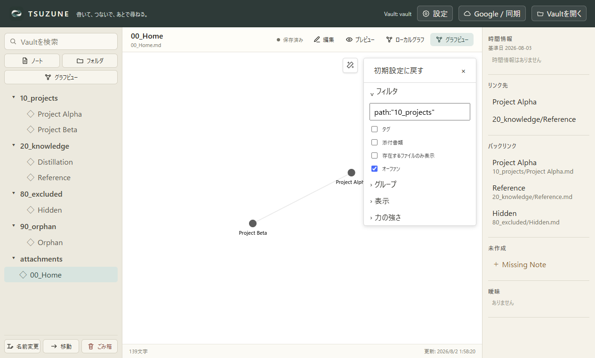

01 · Query entry
Exact query visible · 2 nodes · 1 visible edge
Obsidian1.13.4

TSUZUNEworking tree

GP0 · Evidence comparison · 2026-08-03
結論:
path:"10_projects" に限り、TSUZUNE は Obsidian 1.13.4 で観測した
Global Graph の検索保持挙動と一致した。対象は入力直後、Graph の close / reopen 後、
full app restart 後に Graph view を表示した時点の3チェックポイントである。
path:"10_projects" のみを比較
各チェックポイントで exact query が入力欄に残り、同じ2ノートだけが表示され、 その間の1本の可視 edge が維持された。これは検索状態と filtered topology の behavior match である。
Obsidian の probe は各時点で raw renderedLinkCount: 2 を返すが、
画像上は2ノード間の1本の接続である。本表では unique visible edge 1本へ正規化した。
TSUZUNE は edgeCount: 1 を直接記録している。
| Checkpoint | Obsidian 1.13.4 | TSUZUNE working tree | 判定 |
|---|---|---|---|
| Query entry | Exact query 適用。2 nodes / 1 unique visible edge。 | Exact query 適用。2 nodes / 1 edge。 | MATCH |
| Graph close / reopen | Query と filtered topology を保持。 | Query と filtered topology を保持。 | MATCH |
| Full restart → Graph view | Second process の Graph で query と topology を確認。 | Second process で Graph を表示後、query と topology を確認。 | MATCH* |
* Graph の自動 workspace restoration は比較対象外。
画像は各 checkpoint の状態確認用であり、見た目の同一性を示すものではない。
Exact query visible · 2 nodes · 1 visible edge


Exact query restored · topology unchanged

Second process · exact query restored · topology unchanged

